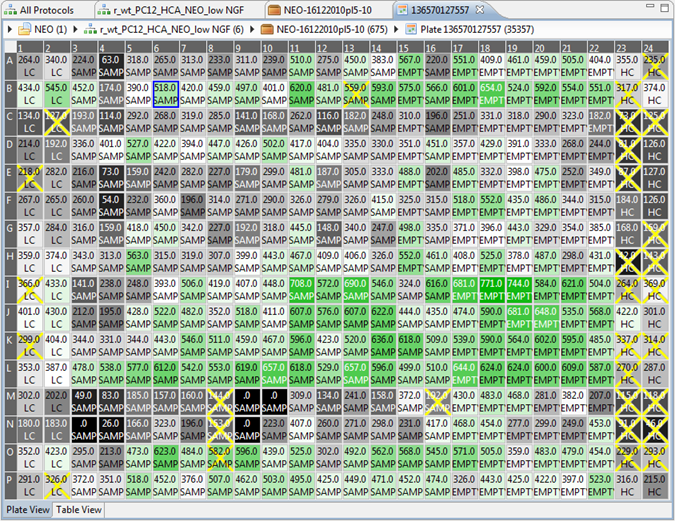

The plate view shows a grid where each cell represents a well. Phaedra uses a plate layout to determine each well type (Sample, LC, etc.).

The plate view or plate grid is built with different layers. These layers include:
- Heatmap: a color scheme linked with the currently chosen feature in the Feature Selector
- Multi-Feature Heatmap: A layer representing several features simultaneously using a small chart that is displayed in each well.
- Well Type: The plate template color scheme
- Image: the well image
- Different kinds of curves. For more info go to heatmap and charts.
- Status indicator: e.g. Rejected wells will get a red or yellow cross.
- Value labels: e.g. Well type (Sample, HC, etc.)
Selecting different layers will lead to different results:

If you want more Heatmaps, you can always open the Quick heatmap view, which offers the same functionality as the plate view.
Layer settings are remembered for the current setting. So, if you open another plate, all the previously selected layers will be shown.
To select wells in a heatmap, click and drag to select any rectangular section. To add disjoint regions, use control -click (and drag).
Then right-click to select the action to execute, e.g. making a chart with these well or their subwell-data, or rejecting the wells.
The complete list of context actions is shown here:

| Browse Compounds | Browse the Well's Compounds |
| Browse Subwell Data | Browse the Well's Subwell Data |
| Show Subwell Image Set | Show the Well's Subwell Image Set |
| Show Well Image | Show the Well's Image |
| Show Dose-Response Curve | Show the Well's Dose-Response Curve |
| Show Quick Heatmap | Show the Well's Quick Heatmap |
| Inspectors | Open an inspector. |
| Accept Well(s) | Accept a well. |
| Reject Well(s) | Reject a well. |
| Edit Well Description | Edit the Well's descriptions |
| Validation | Validate a plate by choosing one of the options |
| Approval | Approve a plate by choosing one of the options |
| Recalculate Plate(s) | Triggers Recalcutation of the selected plate(s) |
| Link Plate Definitions | Link Plate Definitions to a plate |
| Charts | Here you can select different charts that will open in a new view. |
| Export | Opens the Export options. |
| Workflows | Opens Knime Workflows. |
| Copy |
|
| Edit Classification | Here you can modify the classification |
| Layers | Here you can select the different layers that are shown on the heatmaps |
| Configure Value Label | Here you can select the different labels that you see on each cell of the grid |